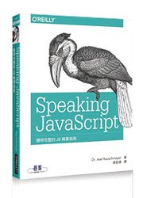
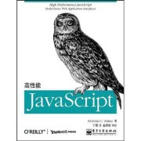
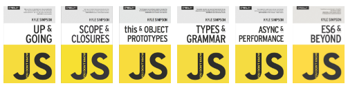

在JavaScript的世界裡面應該用===來比對真實的值是否相等，而非使用==。
前言
會想寫這篇是因從去年看了兩本JavaScript必讀聖經後，在昨天又購入了JavaScript深入精要第三本聖經，第一章開宗明義地讓我了解了這些觀念，這些以前一直讓我感到困惑或是不甚理解的地方(此文章原撰寫在2014/1/4)。
== and ===
這邊參考JavaScript tutorial:
Comparison operators
==
The == operator will compare for equality after doing any necessary type conversions.
寬鬆的相等性(lenient equality)，會先嘗試轉換不同型(type)的值，然後再以嚴格相等性的方式來比較它們。
===
The === operator will not do the conversion, so if two values are not the same type === will simply return false
嚴格的相等性(strict equality)，只考量具有同樣型別的值是否相等。
compare
這邊簡單來看JS個別的判斷後就可以知道差異了
'' == '0' // false
0 == '' // true
0 == '0' // true
false == 'false' // false
false == '0' // true
false == undefined // false
false == null // false
null == undefined // true
' \t\r\n ' == 0 // true簡單來講 === 會測試兩個 values 的類型 (object type)，而==則是會將兩邊轉型成可以判斷的判別式後才進行比對，這會導致我們真的在做比對時容易有誤差。而我們長久以來有部分開發習慣可能是利用這個誤差來做一些判斷如:
if(testObject){
// do something if testObject != null
}這邊就是用 testObject != null 這樣的判斷來進行。但常見的陷阱卻有下面這些:
NaN
NaN == NaN; // falseboolean
2 == true; // 2 === 1, false
2 == false; // 2 === 0, false
1 == true; // 1 === 1, true
0 == false; // 0 === 0, true
'' == false; // 0 === 0, true
'1' == true ; // 1 === 1, true
'0' == false; // 0 === 0, true
'test' == true // NaN === 1, false object
{} =='[object Objec]'; // true
['123'] == 123; // true
[] == 0; // true看完上面的反例相信你已經吐血了，簡單來講==根本沒有令人信服的案例。有的只是因為轉型帶來比較簡化的判斷而已。
結論
曾經有一派宣稱如果==能滿足需求，則使用===較為麻煩與不必要。但在某些情況你實在無法去思考到底寫這段判別式的人如果用==是已經預測到他會轉型還是根本沒料想到這樣會發生問題。當在用了比較嚴格的XXLint(ESLint, jsLint, jshint and etc…)工具後習慣用===則是大家的通識。
JS學習推薦
對於JavaScript學習推薦的書籍三本書分別如下:
JavaScript設計模式

JavaScript優良部分

JavaScript深入精要

如果看三本沒時間或太麻煩的話，建議直接看下面這本
Speaking JavaScript｜簡明完整的 JS 精要指南 (Speaking JavaScript)

除此之外必讀就是Mozilla的Core JavaScript 1.5 Guide
也另外推薦兩本書可以參考:
JavaScript高性能

Object-Oriented JavaScript - Second Edition

最後強力推薦You Don’t Know JS 這系列的線上書籍(實體書本也有，英文已經出版，中文要等2017才會出完)

如果對JavaScript有興趣，且願意把手弄髒去了解它實際原理的非常推薦你看完這些書籍。
很多人知道台灣的這些學習書籍不算少但大多都入門書，扣除沒能力寫之外也沒幾個出版社願意讓這些大師們出進階的書籍(入門書的銷量就不是很好了，出進階書籍還得了…)，請用行動支持這些願意花人生短短沒幾年的時間來寫書並分享給你經驗的大師，有他們的付出我們才能站在巨人的肩上看得更高更遠。
P.S. 大師包含國外與國內這些願意寫書分喜的作家們